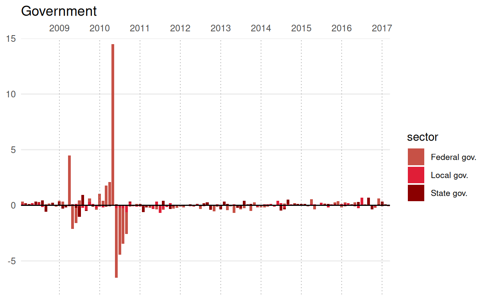
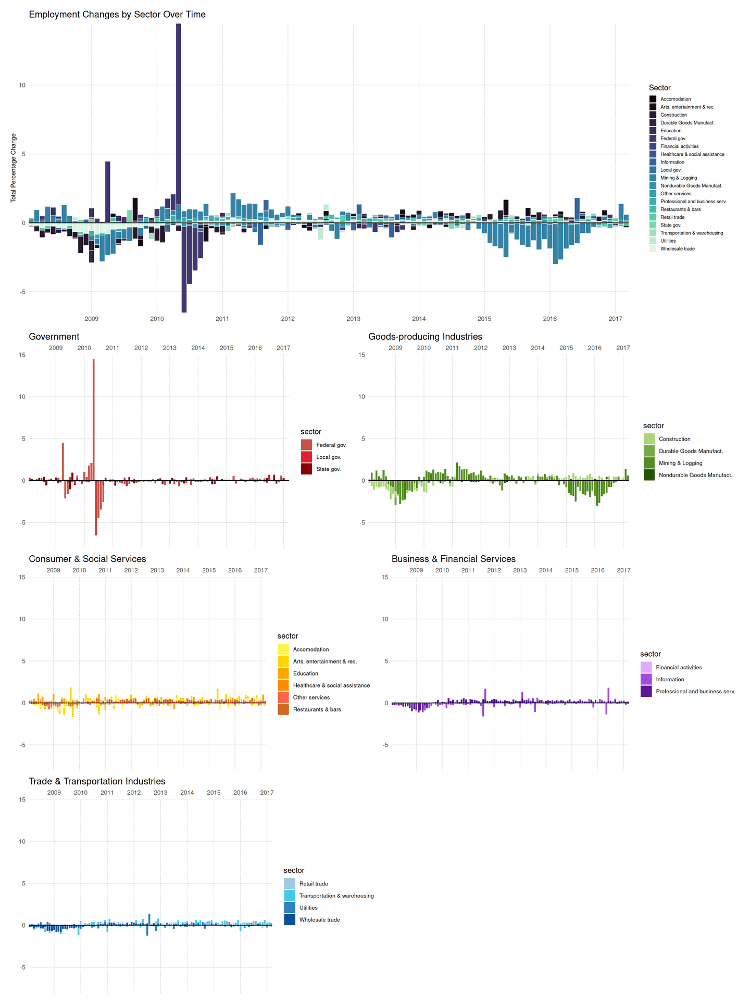

Original Graph
The graph titled “Track National Unemployment” was published in The Wall Street Journal, as an interactive tool to monitor changes in the U.S. job market over time. It aims to illustrate how employment levels vary across different industries, allowing readers to compare sector-specific trends and identify which areas of the economy are growing or declining. By presenting employment data in a visual format, the tracker highlights broader labor market patterns while facilitating users to explore industry-level differences in more detail.
Graph replication
Download libraries
In order to replicate the graph the first step is to load the required libraries.
Import data
payrol_unemployment <- read.csv(file = "./monthly.csv")Organise data for clarity
Add the names to the variables and convert the “date” variable into date type.
new_payrol_unemployement <-
payrol_unemployment |>
rename(date = "observation_date",
transportation_and_warehousing = "CES4300000001",
utilities = "CES4422000001",
education = "CES6561000001",
health_care_and_social_assistance = "CES6562000001",
arts_entertainment_and_rec = "CES7071000001",
accommodation = "CES7072100001",
restaurants_and_bars = "CES7072200001",
federal_government = "CES9091000001",
state_government = "CES9092000001",
local_government = "CES9093000001",
durable_goods_manufacturing = "DMANEMP",
nondurable_goods_manufacturing = "NDMANEMP",
construction = "USCONS",
financial_activities = "USFIRE",
information = "USINFO",
mining_and_logging = "USMINE",
professional_and_business_services = "USPBS",
other_services = "USSERV",
retail_trade = "USTRADE",
wholesale_trade = "USWTRADE"
) |>
mutate(date = as.Date(date, format = "%Y-%m-%d"))Calculate month-over-month % change
The original data set only provides the raw data, however to replicate the data it is necessary to make the calculation of the month-over-month percent change.
percentage_payroles <- new_payrol_unemployement |>
arrange(date) |>
mutate(across(
c(transportation_and_warehousing,
utilities,
education,
health_care_and_social_assistance,
arts_entertainment_and_rec,
accommodation,
restaurants_and_bars,
federal_government,
state_government,
local_government,
durable_goods_manufacturing,
nondurable_goods_manufacturing,
construction,
financial_activities,
information,
mining_and_logging,
professional_and_business_services,
other_services,
retail_trade,
wholesale_trade),
~ (. - lag(.)) / lag(.) * 100
))It is important to mention that the data is slightly different than original because the BLS(Bureau of Labor Statistics) constantly revises employment numbers after they are first released, so data downloaded at different times will have slightly different values.
Main plot
The main part of the plot has data divides into two: main part which has the percentage change (colorful) and a grey plot at the bottom with the percentage change values that are close to 0 (values between -0.01 and 0.01), very or little change.
Tidy and divide data
We divide the data into two: “plot_data” (colorful plot) and “data_zero” (grey plot), in order to create two plots for the main part of the data. Additionally we tidy the data using “pivot_longer” so that the information is organised in columns by date.
plot_data (values not between -0.01 and 0.01)
plot_data <- percentage_payroles |>
pivot_longer(
cols = -date,
names_to = "sector",
values_to = "percentage_change"
) |>
filter(date >= "2008-02-01" & date <= "2017-03-01") |>
filter(percentage_change <= -0.01 | percentage_change >= 0.01)data_cero (values between -0.01 and 0.01)
data_zero <- percentage_payroles |>
pivot_longer(
cols = -date,
names_to = "sector",
values_to = "percentage_change"
) |>
filter(date >= "2008-02-01" & date <= "2017-03-01") |>
filter(percentage_change > -0.01 & percentage_change < 0.01)Sort and stack data
Since it is a stacked plot we have to order the data around the value zero so that positive values go from 0 to +Infinity and negative values from 0 to -Infinity. This has to be done to both datsets.
plot_data
stacked_data <- plot_data |>
group_by(date) |>
arrange(date, desc(percentage_change)) |>
mutate(is_positive = percentage_change > 0) |>
group_by(date, is_positive) |>
mutate(order = ifelse(is_positive,
rev(row_number()) - 0.5,
-row_number() + 0.5)
) |>
ungroup() |>
mutate(pc_bin = cut( #create intervals with breaks saved in pc_bin
percentage_change,
breaks = c(-Inf, -1, -0.75, -0.5, -0.25, 0, 0.25, 0.5, 0.75, Inf),
include.lowest = TRUE,
labels = c("(-Inf,-1]", "(-1,-0.75]", "(-0.75,-0.5]",
"(-0.5,-0.25]", "(-0.25,0]", "(0,0.25]",
"(0.25,0.5]", "(0.5,0.75]", "(0.75,Inf]")
))data_cero
zero_stacked <- data_zero |>
group_by(date) |>
arrange(date, percentage_change) |>
mutate(stacked_position = row_number()) |>
ungroup()Combine data into the same dataset
After we have divided the data into two we need to join them back again to create the main plot.
Plotting
Both two tile plots are plotted and saved as p1.
p1 <- ggplot(combined_data, aes(x = date, y = order)) +
annotate("rect",
xmin = as.Date(-Inf),
xmax = as.Date("2009-06-30"),
ymin = -Inf,
ymax = 20,
fill = "grey90",
alpha = 0.5) +
annotate("text",
x = as.Date("2008-02-01"),
y = 16,
label = "RECESSION",
hjust = 0,
vjust = 0.5,
size = 2.5,
color = "grey30") +
geom_tile(data = subset(combined_data,
category == "main"),
aes(fill = pc_bin),
width = 25,
height = 1,
colour = "white",
linewidth = 0.1) +
geom_tile(data = subset(combined_data,
category == "unch"),
width = 25,
height = 1,
fill = "#999999",
colour = "white",
linewidth = 0.1) +
scale_fill_manual(values = c(
"(-Inf,-1]" = "#ce472e",
"(-1,-0.75]" = "#f05336",
"(-0.75,-0.5]" = "#faa224",
"(-0.5,-0.25]" = "#ffd73e",
"(-0.25,0]" = "#efe3be",
"(0,0.25]" = "#c6e3bb",
"(0.25,0.5]" = "#a3d393",
"(0.5,0.75]" = "#64bc52",
"(0.75,Inf]" = "#0099dc"
)) +
scale_x_date(date_breaks = "1 year", date_labels = "%Y", position = "top", expand = c(0, 0)) +
scale_y_continuous(breaks = c(20, 15, 10, 5, 0, -5, -10, -15, -20, -22),
labels = c("20", "15", "10", "5", "0", "-5", "-10", "-15", "-20", "Unch."),
limits = c(-23, 21),
expand = c(0, 0)) +
coord_fixed(ratio = 25) +
theme_minimal() +
theme(
axis.text.x.top = element_text(size = 6, angle = 0, hjust = 0.5, vjust = -1),
axis.text.y = element_text(size = 6, hjust = 1, vjust = 0.5),
axis.title.y = element_text(size = 5, angle = 90, vjust = 0.5),
axis.ticks.x.top = element_line(color = "black", linewidth = 0.5),
axis.ticks.length.x.top = unit(0.1, "cm"),
axis.ticks.y = element_line(color = "black", linewidth = 0.5),
axis.ticks.length.y = unit(0.1, "cm"),
panel.grid.major = element_blank(),
panel.grid.minor = element_blank(),
panel.background = element_rect(fill = "white", color = NA),
plot.background = element_rect(fill = "white", color = NA),
plot.margin = margin(10, 10, 10, 10),
legend.position = "none"
) +
labs(x = NULL,
y = "< SECTORS FALLING SECTORS RISING > ",
fill = NULL)
p1
Colour scale plot
The third part of this data visualization is a colour scale that goes from red to blue, representing the percentages in a scale that starts at below -1% to above 0.75%.
Create the legend of the colour scale
legend_data <- data.frame(
x = 1:9,
y = 1,
color_bin = c("(-Inf,-1]", "(-1,-0.75]", "(-0.75,-0.5]", "(-0.5,-0.25]",
"(-0.25,0]", "(0,0.25]", "(0.25,0.5]", "(0.5,0.75]", "(0.75,Inf]")
)Plotting
In this case the color scale is plotted and saved as p2. It is also important to note that the size of the numbers and ticks are adjusted manually so that they fit when all of the plots are joined together in the next section.
p2 <- ggplot(legend_data, aes(x = x, y = y, fill = color_bin)) +
geom_tile(width = 1, height = 1, color = NA) +
scale_fill_manual(values = c(
"(-Inf,-1]" = "#ce472e",
"(-1,-0.75]" = "#f05336",
"(-0.75,-0.5]" = "#faa224",
"(-0.5,-0.25]" = "#ffd73e",
"(-0.25,0]" = "#efe3be",
"(0,0.25]" = "#c6e3bb",
"(0.25,0.5]" = "#a3d393",
"(0.5,0.75]" = "#64bc52",
"(0.75,Inf]" = "#0099dc"
)) +
annotate("segment", x= 1.5, xend = 1.5, y = 0.35, yend = 0.15,
color = "black", linewidth = 0.5) +
annotate("segment", x = 5.5, xend = 5.5, y = 0.35, yend = 0.15,
color = "black", linewidth = 0.5) +
annotate("segment", x = 8.5, xend = 8.5, y = 0.35, yend = 0.15,
color = "black", linewidth = 0.5) +
annotate("text", x = 1.5, y = -0.1, label = "-1%", size = 2.4) +
annotate("text", x = 5.5, y = -0.1, label = "0%", size = 2.4) +
annotate("text", x = 8.5, y = -0.1, label = "0.75%", size = 2.4) +
scale_x_continuous(expand = c(0, 0)) +
scale_y_continuous(expand = c(0, 0)) +
coord_fixed(ratio = 1, clip = "off") +
theme_void() +
theme(
legend.position = "none",
plot.margin = margin(5, 5, 20, 5)
)
p2
Join plots
Plot p1 and p2 are joined together and their size is adjusted to properly replicate the original data visualization.
ggdraw() +
draw_plot(p1, x = 0.01, y = 0, width = 0.99, height = 0.90) +
draw_plot(p2, x = 0.65, y = 0.70, width = 0.25, height = 0.20) +
draw_label("Winners and Losers: Job Gains and Losses", x = 0.35, y = 0.96, size = 10, fontface = "bold", hjust = 0.5) +
draw_label("Track the number of sectors gaining or losing jobs each month. Boxes are shaded based on percentage change\nfrom the previous month in each sector's payrolls.", x = 0.16, y = 0.90, size = 8, hjust = 0)
Alternative graph
After doing the replication of the selected data visualization, several issues emerged that lead to a misrepresentation of the data. First, the original tile plot is interactive; therefore, by recreating it as a static visualization causes a loss of information. In the static version viewers can only infer the percentage range using the colour scale, not the exact value. More importantly, we can not see what sector each square is representing. Therefore, the previous plot is only helpful in reflecting the the overall tendency of the job market.
Secondly, when checking the values, the y-axis only represents number of squares and squares on the same horizontal line vary highly in their values. This is because the tiles are ordered vertically, therefor making it difficult to compare for one column to the next.
New plot dataset
We create a new data set with values only from the desired dates.
bar_plot_new <- percentage_payroles |>
pivot_longer(
cols = -date,
names_to = "sector",
values_to = "percentage_change"
) |>
filter(date >= "2008-02-01" & date <= "2017-03-01") Plotting data (main plot)
We assign to each variable the correct label name for each sector.
names_sectors <- c(
"construction" = "Construction",
"durable_goods_manufacturing" = "Durable Goods Manufact.",
"mining_and_logging" = "Mining & Logging",
"nondurable_goods_manufacturing" = "Nondurable Goods Manufact.",
"wholesale_trade" = "Wholesale trade",
"retail_trade" = "Retail trade",
"transportation_and_warehousing" = "Transportation & warehousing",
"utilities" = "Utilities",
"information" = "Information",
"financial_activities" = "Financial activities",
"professional_and_business_services" = "Professional and business serv.",
"education" = "Education",
"health_care_and_social_assistance" = "Healthcare & social assistance",
"accommodation" = "Accomodation",
"restaurants_and_bars" = "Restaurants & bars",
"arts_entertainment_and_rec" = "Arts, entertainment & rec.",
"other_services" = "Other services",
"federal_government" = "Federal gov.",
"state_government" = "State gov.",
"local_government" = "Local gov."
)Main plot
The previous data is used to create an overlapping bar plot of all job sectors, usign zero as the reference value.
p3 <- ggplot(bar_plot_new, aes(x = date, y = percentage_change, fill = sector)) +
geom_col(position = "identity", width = 30, color = "white", linewidth = 0.3) +
geom_vline(xintercept = as.numeric(as.Date(paste0(2009:2017, "-01-01"))),
color = "grey60", linewidth = 0.3, linetype = "dotted") +
geom_hline(yintercept = 0, color = "black", linewidth = 0.5) +
scale_x_date(date_breaks = "1 year", date_labels = "%Y", expand = c(0, 0)) +
scale_y_continuous(breaks = seq(-15, 15, by = 5),
expand = c(0, 0)) +
scale_fill_viridis_d(option = "mako",
labels = names_sectors) +
theme_minimal() +
theme(
axis.text.x = element_text(size = 9, angle = 0, hjust = 0.5),
axis.title.y = element_text(size = 9),
panel.grid.major.x = element_blank(),
panel.grid.minor = element_blank(),
panel.background = element_rect(fill = "white", color = NA),
plot.background = element_rect(fill = "white", color = NA),
plot.margin = margin(10, 10, 10, 10),
legend.position = "right",
legend.text = element_text(size = 7),
legend.key.size = unit(0.4, "cm")
) +
labs(x = NULL,
y = "Total Percentage Change",
fill = "Sector",
title = "Employment Changes by Sector Over Time"
)
p3 
Small plots
Additionally in order to better view each sector, I created five smaller bar plots divided by sectors.
Create a named vector with shaded colors for each sector
sector_colors <- c(
# Goods-producing (GREEN shades)
"construction" = "#aad576",
"durable_goods_manufacturing" = "#73a942",
"mining_and_logging" = "#538d22",
"nondurable_goods_manufacturing" = "#245501",
# Trade & Transportation (BLUE shades)
"retail_trade" = "#9ECAE1",
"transportation_and_warehousing" = "#48cae4",
"utilities" = "#3182BD",
"wholesale_trade" = "#08519C",
# Business & Financial Services (PURPLE shades)
"financial_activities"= "#e0aaff",
"information" = "#9d4edd",
"professional_and_business_services" = "#5a189a",
# Consumer & Social Services (ORANGE shades)
"accommodation" = "#FFF44F",
"arts_entertainment_and_rec" = "#FFD700",
"education" = "#FFA500",
"health_care_and_social_assistance" = "#FF8C00",
"other_services" = "#FF6347",
"restaurants_and_bars" = "#D2691E",
# Government (RED shades)
"federal_government" = "#c75146",
"local_government"= "#e01e37",
"state_government" = "#8B0000"
)Goods producing industries
goods_plot <- bar_plot_new|>
filter(sector %in% c("mining_and_logging", "construction",
"durable_goods_manufacturing", "nondurable_goods_manufacturing")
)|>
ggplot(aes(x = date, y = percentage_change, fill = sector)) +
geom_col(position = "identity", width = 25) +
geom_vline(xintercept = as.numeric(as.Date(paste0(2009:2017, "-01-01"))),
color = "grey60", linewidth = 0.3, linetype = "dotted") +
geom_hline(yintercept = 0, color = "black", linewidth = 0.5) +
scale_x_date(date_breaks = "1 year", date_labels = "%Y", expand = c(0, 0), position = "top") +
scale_y_continuous(expand = c(0, 0),
limits = c(-8, 15)) +
scale_fill_manual(values = sector_colors,
labels= names_sectors) +
theme_minimal() +
theme(
panel.grid.major.x = element_blank(),
panel.grid.minor = element_blank(),
panel.background = element_rect(fill = "white", color = NA),
plot.background = element_rect(fill = "white", color = NA),
) +
labs(title = "Goods-producing Industries", x = NULL, y = NULL) +
theme(legend.position = "right", legend.text = element_text(size = 8))
goods_plot
Trade & Transportation
trade_trans_plot <- bar_plot_new|>
filter(sector %in% c("wholesale_trade", "retail_trade", "transportation_and_warehousing", "utilities")
)|>
ggplot(aes(x = date, y = percentage_change, fill = sector)) +
geom_col(position = "identity", width = 25) +
geom_vline(xintercept = as.numeric(as.Date(paste0(2009:2017, "-01-01"))),
color = "grey60", linewidth = 0.3, linetype = "dotted") +
geom_hline(yintercept = 0, color = "black", linewidth = 0.5) +
scale_x_date(date_breaks = "1 year", date_labels = "%Y", expand = c(0, 0), position = "top") +
scale_y_continuous(expand = c(0, 0),
limits = c(-8, 15)) +
scale_fill_manual(values = sector_colors,
labels = names_sectors) +
theme_minimal() +
theme(
panel.grid.major.x = element_blank(),
panel.grid.minor = element_blank(),
panel.background = element_rect(fill = "white", color = NA),
plot.background = element_rect(fill = "white", color = NA),
) +
labs(title = "Trade & Transportation Industries", x = NULL, y = NULL) +
theme(legend.position = "right", legend.text = element_text(size = 8))
trade_trans_plot
Business & Financial Services
business_finan_plot <- bar_plot_new|>
filter(sector %in% c("information", "financial_activities", "professional_and_business_services")
)|>
ggplot(aes(x = date, y = percentage_change, fill = sector)) +
geom_col(position = "identity", width = 25) +
geom_vline(xintercept = as.numeric(as.Date(paste0(2009:2017, "-01-01"))),
color = "grey60", linewidth = 0.3, linetype = "dotted") +
geom_hline(yintercept = 0, color = "black", linewidth = 0.5) +
scale_x_date(date_breaks = "1 year", date_labels = "%Y", expand = c(0, 0), position = "top") +
scale_y_continuous(expand = c(0, 0),
limits = c(-8, 15)) +
scale_fill_manual(values = sector_colors,
labels = names_sectors) +
theme_minimal() +
theme(
panel.grid.major.x = element_blank(),
panel.grid.minor = element_blank(),
panel.background = element_rect(fill = "white", color = NA),
plot.background = element_rect(fill = "white", color = NA),
) +
labs(title = "Business & Financial Services", x = NULL, y = NULL) +
theme(legend.position = "right", legend.text = element_text(size = 8))
business_finan_plot
Consumer & Social Services
consum_social_plot <- bar_plot_new|>
filter(sector %in% c("education", "health_care_and_social_assistance", "accommodation",
"restaurants_and_bars", "arts_entertainment_and_rec", "other_services")
)|>
ggplot(aes(x = date, y = percentage_change, fill = sector)) +
geom_col(position = "identity", width = 25) +
geom_vline(xintercept = as.numeric(as.Date(paste0(2009:2017, "-01-01"))),
color = "grey60", linewidth = 0.3, linetype = "dotted") +
geom_hline(yintercept = 0, color = "black", linewidth = 0.5) +
scale_x_date(date_breaks = "1 year", date_labels = "%Y", expand = c(0, 0), position = "top") +
scale_y_continuous(expand = c(0, 0),
limits = c(-8, 15)) +
scale_fill_manual(values = sector_colors,
labels = names_sectors) +
theme_minimal() +
theme(
panel.grid.major.x = element_blank(),
panel.grid.minor = element_blank(),
panel.background = element_rect(fill = "white", color = NA),
plot.background = element_rect(fill = "white", color = NA),
) +
labs(title = "Consumer & Social Services", x = NULL, y = NULL) +
theme(legend.position = "right", legend.text = element_text(size = 8))
consum_social_plot
Government
gov_plot <- bar_plot_new|>
filter(sector %in% c("federal_government", "state_government", "local_government")
)|>
ggplot(aes(x = date, y = percentage_change, fill = sector)) +
geom_col(position = "identity", width = 25) +
geom_vline(xintercept = as.numeric(as.Date(paste0(2009:2017, "-01-01"))),
color = "grey60", linewidth = 0.3, linetype = "dotted") +
geom_hline(yintercept = 0, color = "black", linewidth = 0.5) +
scale_x_date(date_breaks = "1 year", date_labels = "%Y", expand = c(0, 0), position = "top") +
scale_y_continuous(expand = c(0, 0),
limits = c(-8, 15)) +
scale_fill_manual(values = sector_colors,
labels = names_sectors) +
theme_minimal() +
theme(
panel.grid.major.x = element_blank(),
panel.grid.minor = element_blank(),
panel.background = element_rect(fill = "white", color = NA),
plot.background = element_rect(fill = "white", color = NA),
) +
labs(title = "Government", x = NULL, y = NULL) +
theme(legend.position = "right", legend.text = element_text(size = 8))
gov_plot
Joining plots
Lastly all plots are joined together to have a general view of the distribution of the data.
layout <-
p3 /
(gov_plot | goods_plot) /
(consum_social_plot | business_finan_plot) /
(trade_trans_plot | plot_spacer()) +
plot_layout(heights = c(1.5, 1, 1, 1))
layout
This alternative graph provides a more detailed and clear view of the evolution of the number of jobs for each sector. The smaller plots allow for comparison between all sector of the most significant months where there were job gains or losses. Even though each type of job sector follows the general market trend, not all we affected the same way through out the years as a consequence of economic factors such as crises during 2008.
In conclusion, this article outlines the process of recreating a graph that tracks national unemployment. This exercise emphasizes the importance of critically evaluating data visualizations, as although a graph may appear visually appealing, it can still lack clear structure and an easy-to-understand representation of the data. Additionally, it highlights the significant amount of effort involved in producing a graph that appears simple, requiring careful attention to detail to improve both its interpretability and overall usefulness.